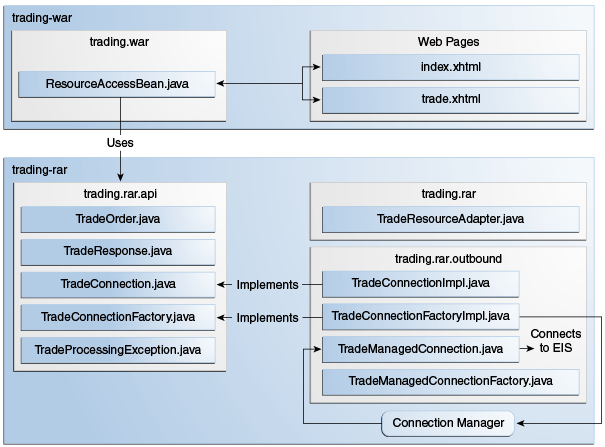

1. The Resource Adapter Examples
This chapter describes two examples that demonstrate how to use resource adapters in Jakarta EE applications and how to implement simple resource adapters.
1.1. Overview of the Resource Adapter Examples
The trading example shows how to use a simple custom client interface
to connect to an EIS from a web application. The resource adapter in
this example implements the outbound contract and the custom client
interface. The traffic example shows how to use a message-driven bean
(MDB) to process traffic information updates from an EIS. The resource
adapter in this example implements the inbound and work management
contracts.
1.2. The trading Example
The trading example demonstrates how to implement and use a simple
outbound resource adapter that submits requests to a legacy EIS using a
TCP socket. The example demonstrates the scenario in
Figure 56-1 and consists of the following modules:
-
trading-eis: A Java SE program that simulates a legacy EIS -
trading-rar: The outbound resource adapter implementation -
trading-war: A web application that uses the resource adapter -
trading-ear: An enterprise archive that contains the resource adapter and the web application
The trading-eis module is an auxiliary project that resembles a legacy
stock trading execution platform. It contains a Java SE program that
listens for trading requests in plain text on a TCP socket. The program
replies to trading requests with a status value, a confirmation number,
and the dollar amounts for the requested shares and fees. For example, a
request-response pair would look like this:
>> BUY 1000 ZZZZ MARKET
<< EXECUTED #1234567 TOTAL 50400.00 FEE 252.00The trading-rar module implements the outbound contract of the Jakarta EE
Connector Architecture to submit requests and obtain responses from the
legacy stock trading execution platform. The trading-rar module
provides and implements a custom client interface for Jakarta EE
applications to use. This interface is simpler than the Common Client
Interface (CCI).
The trading-war module is a web application with a Jakarta Server Faces
interface and a managed bean. This application enables clients to submit
trades to the EIS using the resource adapter provided by the
trading-rar module. The trading-war module uses the custom client
interface provided by the resource adapter to obtain connections to the
EIS.
1.2.1. Using the Outbound Resource Adapter
In most cases, Jakarta EE application developers use outbound resource adapters developed by a third party. Outbound resource adapters either implement the Common Client Interface (CCI) or provide a custom interface for applications to interact with the EIS. Outbound resource adapters provide Jakarta EE applications with the following elements:
-
Connection factories
-
Connection handles
-
Other interfaces and objects specific to the EIS domain
Jakarta EE applications obtain an instance of the connection factory via resource injection and then use the factory object to obtain connection handles to the EIS. The connection handles enable the application to make requests and obtain information from the EIS.
The trading-rar module provides a custom client interface that
consists of the classes listed in Table 56-1.
Table 56-1 Classes and Interfaces in the jakarta.tutorial.trading.rar.api Package
API Component |
Description |
|
Represents a trade order for the EIS |
|
Represents a response from the EIS to a trade request |
|
Represents a connection handle to the EIS Provides a method for applications to submit trades to the EIS |
|
Enables applications to obtain connection handles to the EIS |
|
Indicates that a problem occurred processing a trade request |
The ResourceAccessBean managed bean in the trading-war module
configures a connection factory for the trading-rar resource adapter
by using the @ConnectionFactoryDefinition annotation as follows:
@Named
@SessionScoped
@ConnectionFactoryDefinition(
name = "java:comp/env/eis/TradeConnectionFactory",
interfaceName = "jakarta.tutorial.trading.rar.api.TradeConnectionFactory",
resourceAdapter = "#trading-rar",
minPoolSize = 5,
transactionSupport =
TransactionSupport.TransactionSupportLevel.NoTransaction
)
public class ResourceAccessBean implements Serializable { ... }The name parameter specifies the JNDI name for the connection factory.
This example registers the connection factory in the java:comp scope.
You can use the ConnectionFactoryDefinition annotation to specify a
different scope, such as java:global, java:app, or java:module.
The AdministeredObjectDefinition annotation also enables you to
register administered connector objects in the JNDI namespace.
The interfaceName parameter specifies the interface implemented by the
connection factory included in the resource adapter. In this example,
this is a custom interface.
The resourceAdapter parameter specifies the name of the resource
adapter that contains the connection factory implementation. The #
prefix in #trading-rar indicates that trading-rar is an embedded
resource adapter that is bundled in the same EAR as this web
application.
Note: You can also configure a connection factory for a previously deployed outbound resource adapter using the administration commands from your application server. However, this is a vendor-specific procedure. |
The managed bean obtains a connection factory object using resource injection as follows:
...
public class ResourceAccessBean implements Serializable {
@Resource(lookup = "java:comp/env/eis/TradeConnectionFactory")
private TradeConnectionFactory connectionFactory;
...
}The managed bean uses the connection factory to obtain connection handles as follows:
TradeConnection connection = connectionFactory.getConnection();The resource adapter returns a connection handle associated with a physical connection to the EIS. Once a connection handle is available, the managed bean submits a trade and obtains the response as follows:
TradeOrder order = new TradeOrder();
order.setNShares(1000);
order.setTicker(TradeOrder.Ticker.YYYY);
order.setOrderType(TradeOrder.OrderType.BUY);
order.setOrderClass(TradeOrder.OrderClass.MARKET);
...
try {
TradeResponse response = connection.submitOrder(order);
...
} catch (TradeProcessingException ex) { ... }1.2.2. Implementing the Outbound Resource Adapter
The trading-rar module implements the outbound contract and a custom
client interface for the simple legacy stock trading platform EIS used
in this example. The architecture of the outbound resource adapter is
shown in Figure 56-2.

The trading-rar module implements the interfaces listed in
Table 56-2.
Table 56-2 Interfaces Implemented in the trading-rar Module
Package |
Interface |
Description |
|
|
Defines the lifecycle methods of the resource adapter |
|
|
Defines a connection factory that the connection manager from the application server uses to obtain physical connections to the EIS |
|
|
Defines a physical connection to the EIS that can be managed by the connection manager |
|
|
Defines a connection factory that applications use to obtain connection handles |
|
|
Defines a connection handle that applications use to interact with the EIS |
When the trading-ear archive is deployed and a connection pool
resource is configured as described in Using the Outbound
Resource Adapter, the application server creates
TradeConnectionFactory objects that applications can obtain using
resource injection. The TradeConnectionFactory implementation
delegates creating connections to the connection manager provided by the
application server.
The connection manager uses the ManagedConnectionFactory
implementation to obtain physical connections to the EIS and maintains a
pool of active physical connections. When an application requests a
connection handle, the connection manager associates a connection from
the pool with a new connection handle that the application can use.
Connection pooling improves application performance and simplifies
resource adapter development.
For more details, see the code and the comments in the trading-rar
module.
1.2.3. Running the trading Example
You can use either NetBeans IDE or Maven to build, package, deploy, and
run the trading example.
The following topics are addressed here:
To Run the trading Example Using NetBeans IDE
-
Make sure that GlassFish Server has been started (see Starting and Stopping GlassFish Server).
-
From the File menu, choose Open Project.
-
In the Open Project dialog box, navigate to:
tut-install/examples/connectors -
Select the
tradingfolder. -
Click Open Project.
-
In the Projects tab, expand the
tradingnode. -
Right-click the
trading-eismodule and select Open Project. -
Right-click the
trading-eisproject and select Run.The messages from the EIS appear in the Output tab:
Trade execution server listening on port 4004. -
Right-click the
trading-earproject and select Build.This command packages the resource adapter and the web application in an EAR file and deploys it to GlassFish Server.
-
Open the following URL in a web browser:
http://localhost:8080/trading/The web interface enables you to connect to the EIS and submit trades. The server log shows the requests from the web application and the call sequence that provides connection handles from the resource adapter.
-
Before undeploying the
trading-earapplication, close thetrading-eisapplication from the status bar.
To Run the trading Example Using Maven
-
Make sure that GlassFish Server has been started (see Starting and Stopping GlassFish Server).
-
In a terminal window, go to:
tut-install/examples/connectors/trading/ -
Enter the following command:
mvn installThis command builds and packages the resource adapter and the web application into an EAR archive and deploys it to GlassFish Server.
-
In the same terminal window, go to the
trading-eisdirectory:cd trading-eis -
Enter the following command to run the trade execution platform:
mvn exec:javaThe messages from the EIS appear in the terminal window:
Trade execution server listening on port 4004. -
Open the following URL in a web browser:
http://localhost:8080/trading/The web interface enables you to connect to the EIS and submit trades. The server log shows the requests from the web application and the call sequence that provides connection handles from the resource adapter.
-
Before undeploying the
trading-earapplication, press Ctrl+C on the terminal window to close thetrading-eisapplication.
1.3. The traffic Example
The traffic example demonstrates how to implement and use a simple
inbound resource adapter that receives data from a legacy EIS using a
TCP socket.
The example is in the tut-install`/examples/connectors/traffic` directory. See Chapter 2, "Using the Tutorial Examples," for basic information on building and running sample applications.
The example demonstrates the scenario in Figure 56-3 and consists of the following modules:
-
traffic-eis: A Java SE program that simulates an EIS -
traffic-rar: The inbound resource adapter implementation -
traffic-ejb: A message-driven bean that is the endpoint for incoming messages -
traffic-war: A web application that displays information from the message-driven bean -
traffic-ear: An enterprise archive that contains the resource adapter, the message-driven bean, and the web application
The traffic-eis module is an auxiliary project that resembles a legacy
traffic information system. It contains a Java SE program that sends
traffic status updates for several cities to any subscribed client. The
program sends the updates in JSON format over a TCP socket. For example,
a traffic update looks like this:
{"report":[
{"city":"City1", "access":"AccessA", "status":"GOOD"},
{"city":"City1", "access":"AccessB", "status":"CONGESTED"},
...
{"city":"City5", "access":"AccessE", "status":"SLOW"}
]}The traffic-rar module implements the inbound contract of the Jakarta Connectors specification.
This module subscribes to the traffic
information system using the TCP port indicated by the configuration
provided by the MDB and invokes the methods of the MDB to process
traffic information updates.
The traffic-ejb module contains a message-driven bean that activates
the resource adapter with a configuration parameter (the TCP port to
subscribe to the traffic information system). The MDB contains a method
to process the traffic information updates. This method filters the
updates for a particular city and publishes the results to a Java
Message Service (JMS) topic.
The traffic-war module contains a message-driven bean that receives
filtered traffic information updates from the Jakarta Messaging topic asynchronously
and sends them to the clients using a WebSocket endpoint.
1.3.1. Using the Inbound Resource Adapter
In most cases, Jakarta EE application developers use inbound resource adapters developed by a third party. To use an inbound resource adapter, a Jakarta EE application includes a message-driven bean with the following characteristics.
-
The MDB implements the business interface defined by the resource adapter.
-
The MDB specifies configuration parameters to activate the resource adapter.
The business interface defined by the resource adapter is not specified in the Jakarta Connectors specification; it is specific to the EIS.
The MDB in this example is defined as follows:
@MessageDriven(
activationConfig = {
@ActivationConfigProperty(propertyName = "port",
propertyValue = "4008")
}
)
public class TrafficMdb implements TrafficListener { ... }The TrafficListener interface is defined in the API package of the
resource adapter. The resource adapter requires the MDB to provide the
port property.
When the MDB is deployed, it activates the traffic-rar resource
adapter, which invokes the methods of the MDB to process traffic
information updates. Then the MDB filters the updates for a particular
city and publishes the results to a Jakarta Messaging topic.
In this particular example, the TrafficListener interface is empty. In
addition to this interface, the resource adapter provides the
TrafficCommand annotation and uses reflection to discover which
methods in the MDB are decorated with this annotation:
@MessageDriven(...)
public class TrafficMdb implements TrafficListener {
@TrafficCommand(name="report", info="Process report")
public void processReport(String jsonReport) { ... }
...
}This approach enables you to adapt the MDB to support new features in
the EIS without having to modify the TrafficListener interface or the
resource adapter module.
1.3.2. Implementing the Inbound Resource Adapter
The traffic-rar module implements the Jakarta Connectors inbound resource adapter
contract for the simple traffic
information system (EIS) used in this example. The architecture of the
inbound resource adapter is shown in Figure 56-4.

The traffic-rar module implements the interfaces listed in
Table 56-3.
Table 56-3 Interfaces Implemented in the traffic-rar Module
Package |
Interface |
Description |
|
|
Defines the lifecycle methods of the resource adapter. |
|
|
Defines the configuration parameters that the MDB provides to activate the inbound resource adapter. |
|
|
The traffic service subscriber implements this interface from the work management contract to wait for traffic updates on a separate thread. |
When an MDB activates the inbound resource adapter, the container
invokes the endpointActivation method in the TrafficResourceAdapter
class:
@Connector(...)
public class TrafficResourceAdapter implements ResourceAdapter, Serializable {
...
@Override
public void endpointActivation(MessageEndpointFactory endpointFactory,
ActivationSpec spec)
throws ResourceException {
Class endpointClass = endpointFactory.getEndpointClass();
/* this method is called from a new thread in the example:
MessageEndpoint endpoint = endpointFactory.createEndpoint(null); */
}
}The getEndpointClass method returns the Class type of the MDB
performing the activation, which enables the resource adapter to use
reflection to find methods annotated with @TrafficCommand in the MDB.
The createEndpoint method returns an instance of the MDB. The resource
adapter uses this instance to invoke the methods of the MDB when it
receives requests from the EIS.
After obtaining the message endpoint instance (MDB), the resource
adapter uses the work management contract to create the traffic service
subscriber thread that receives traffic updates from the EIS. The
resource adapter obtains the WorkManager instance from the bootstrap
context as follows:
WorkManager workManager;
...
@Override
public void start(BootstrapContext ctx) ... {
workManager = ctx.getWorkManager();
}The resource adapter schedules the traffic service subscriber thread using the work manager:
tSubscriber = new TrafficServiceSubscriber(tSpec, endpoint);
workManager.scheduleWork(tSubscriber);The TrafficServiceSubscriber class implements the
javax.resource.spi.Work interface from the work management contract.
The traffic service subscriber thread uses reflection to invoke the methods in the MDB:
private String callMdb(MessageEndpoint mdb, Method command,
String... params) ... {
String resp;
/* this code contains proper exception handling in the sources */
mdb.beforeDelivery(command);
Object ret = command.invoke(mdb, (Object[]) params);
resp = (String) ret;
mdb.afterDelivery();
return resp;
}
For more details, see the code and the comments in the traffic-rar module.1.3.3. Running the traffic Example
You can use either NetBeans IDE or Maven to build, package, deploy, and
run the traffic example.
The following topics are addressed here:
To Run the traffic Example Using NetBeans IDE
-
Make sure that GlassFish Server has been started (see Starting and Stopping GlassFish Server).
-
From the File menu, choose Open Project.
-
In the Open Project dialog box, navigate to:
tut-install/examples/connectors -
Select the
trafficfolder. -
Click Open Project.
-
In the Projects tab, expand the
trafficnode. -
Right-click the
traffic-eismodule and select Open Project. -
Right-click the
traffic-eisproject and select Run.The messages from the EIS appear on the Output tab:
Traffic EIS accepting connections on port 4008 -
In the Projects tab, right-click the
trafficproject and select Clean and Build.This command builds and packages the resource adapter, the MDB, and the web application into an EAR archive and deploys it. The server log shows the call sequence that activates the resource adapter and the filtered traffic updates for City1.
-
Open the following URL in a web browser:
http://localhost:8080/traffic/The web interface shows filtered traffic updates for City1 every few seconds.
-
After undeploying the
traffic-earapplication, close thetraffic-eisapplication from the status bar.
To Run the traffic Example Using Maven
-
Make sure that GlassFish Server has been started (see Starting and Stopping GlassFish Server).
-
In a terminal window, go to:
tut-install/examples/connectors/traffic/traffic-eis/ -
Enter the following command in the terminal window:
mvn installThis command builds and packages the traffic EIS.
-
Enter the following command in the terminal window:
mvn exec:javaThe messages from the EIS appear in the terminal window:
Traffic EIS accepting connections on port 4008Leave this terminal window open.
-
Open a new terminal window and go to:
tut-install/examples/connectors/traffic/ -
Enter the following command:
mvn installThis command builds and packages the resource adapter, the MDB, and the web application into an EAR archive and deploys it. The server log shows the call sequence that activates the resource adapter and the filtered traffic updates for City1.
-
Open the following URL in a web browser:
http://localhost:8080/traffic/The web interface shows the filtered traffic updates for City1 every few seconds.
-
After undeploying the
traffic-earapplication, press Ctrl+C in the first terminal window to close thetraffic-eisapplication.